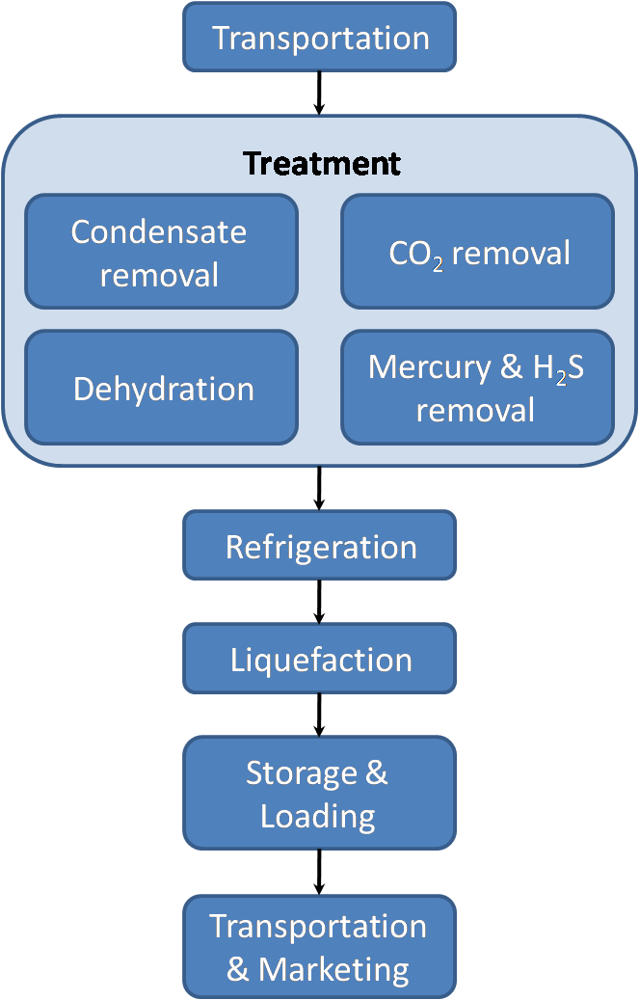

What is LNG?
LNG (Liquified Nature Gas) is natural gas (primarily methane) that has been converted into liquid so thay could transport it easily. It takes up about 1/600th the volume of natural gas in gas state. LNG has less waste, odourless and colourless. The liquifaction process involves removal of certain components, such as dust, acid, gases, helium, water, and heavy carbons. The natural gas is then condensed into a liquid at close to atmospheric pressure by cooling it to approximately -162 °C. Maximum transport pressure is set around 25 kPa.
{kind=link}
LNG achieves a higher reduction in volume than Compressed Natural Gas (CNG) so that the energy
density of LNG is 2.4 times greater than that of CNG or 60% that of diesel fuel. This makes
LNG cost efficient to transport over long distances where pipelines do not exist. Specially
designed cryogenic sea vessels (LNG carriers) or cryogenic road tankers are used for its
transport. LNG is principally used for transporting natural gas to markets, where it is regasified
and distributed as pipeline natural gas. It can be used in natural gas vehicles, although
it is more common to design vehicles to use compressed natural gas. Its relatively high cost
of production and the need to store it in expensive cryogenic tanks have hindered widespread
commercial use. Despite these drawbacks, on energy basis LNG production is expected to hit
10% of the global crude production by 2020
What is it used for?
LNG is used for varieties of purposes such as heat and power generation. Natural gas can be used
to turn a turbine. From the turbine, the eneergy got transferred into moving electrons which
is electric current. The flows of electrons then moves through the transformer and then flows
through high tension power line. Then the flows continues through the power grid before goes
to the society and your house.
Natural gas are used for our stove and oven as well, they are transferred through pipeline to your house.
The natural gas power plants works the same way as other power plants, the only difference is the fuel to turn the generator. Natural gas power plant is more efficient than the other power plants, because the waste heat from the gas-turbine process is directed toward generating steam, whichis then used to generate electricity. This type of power plant can achieve thermal efficiencies up to 50 to 50 percent.
{kind=link}